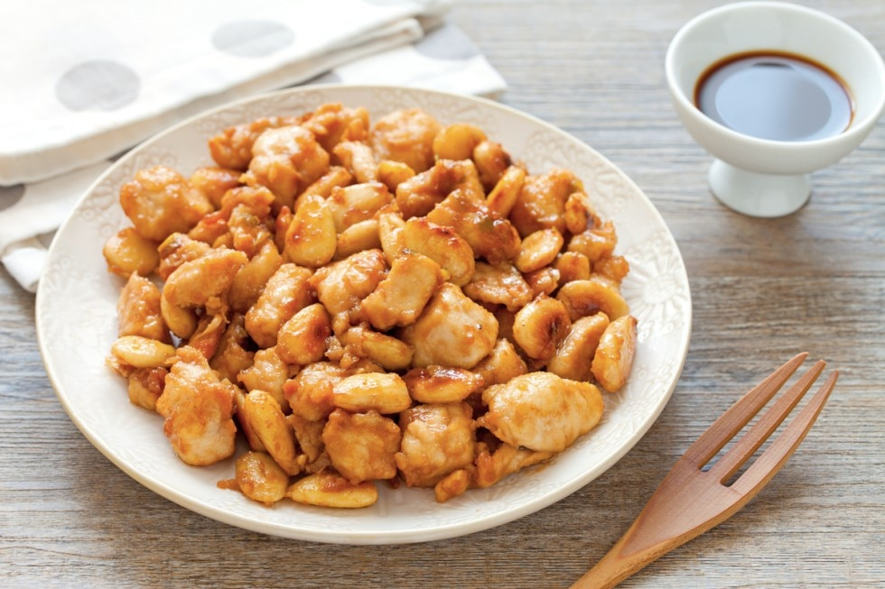

Pollo alle Mandorle

Description
Una ricetta che si ispira al celebre pollo alle mandorle cinese, più veloce e leggera. Un secondo piatto che accanto a del riso pilaf si trasforma in un perfetto piatto unico, pronto in 30 minuti e facilissimo da preparare.
Ingredients
- 500 g di petto di pollo
- 120 g di mandorle pelate
- 2 cucchiai d'acqua
- 1 mazzetto di cipollotti piccoli
- 3 cm di zenzero fresco
- 3 cucchiai di olio di semi
- farina di riso qb
- 1 spicchio d'aglio
Steps
- Per preparare il pollo alle mandorle, per prima cosa tagliate i germogli di bambù a cubetti abbastanza piccoli 1. Riducete a cubetti anche il petto di pollo, avendo cura che siano della stessa dimensione del bambù 2. Ora mettete il pollo in un colino e sciacquatelo con un po’ di acqua: in questo modo risulterà più morbido
- Trasferite il pollo in una ciotola e aggiungete mezzo albume 4, sale, pepe bianco 5 e olio di semi
- Unite anche l’acqua e la fecola di patate 7 e mescolate bene 8; in alternativa alle bacchette potete massaggiare il pollo con le mani. Coprite la ciotola con pellicola e lasciate riposare il pollo per 10 minuti così assorbirà i sapori della marinatura 9.
- Nel frattempo scaldate abbondante olio di semi in un wok avendo cura che arrivi a una temperatura di 180° altrimenti le mandorle rischieranno di bruciarsi. Tuffate le mandorle nell’olio bollente 10 e friggete per circa un minuto, mescolando spesso. Scolate le mandorle 11 e trasferitele in una ciotola 12.
- Portate a bollore una pentola di acqua e sbollentate il pollo per 2 minuti 13, poi scolate e tenete da parte 14. Cambiate l’acqua e portatela nuovamente a bollore, poi versate i germogli di bambù 15.
- Cuocete il bambù per 5 minuti a fuoco medio, con il coperchio 16, poi scolate e tenete da parte 17. A questo punto potete assemblare tutti gli ingredienti: scaldate il wok che avrete precedentemente pulito, poi aggiungete l’olio di semi e il pollo 18.
- Unite anche il bambù 19 e mescolate per un minuto a fuoco alto 20, poi versate l’acqua, continuando sempre a girare 21.
- Aggiungete il sale 22, la salsa di soia scura e quella chiara 23. Continuate a mescolare e, quando il colore sarà diventato omogeneo, unite anche le mandorle 24. Amalgamate il tutto e spegnete il fuoco.
- In una ciotolina a parte sciogliete la fecola in una piccola quantità di acqua. Rimettete il wok sul fuoco medio e aggiungete il composto con la fecola 25: in questo modo otterrete una consistenza molto cremosa. Mescolate sempre per amalgamare bene il tutto 26 e impiattate. Il vostro pollo alle mandorle è pronto per essere servito accompagnato con riso basmati 27!